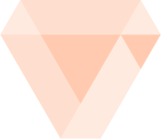

<ion-header>
  <ion-toolbar>
    <ion-title>

      

      <span class="right-align"><a [routerLink]="['/login']">Logout</a></span>
    </ion-title>
  </ion-toolbar>
</ion-header>

<ion-content padding>

  <ion-tab-button (click)="openCamera()">
    <ion-icon name="camera"></ion-icon>
    <ion-label>Photo</ion-label>
  </ion-tab-button>
  <ion-button (click)="presentActionSheet()">
    Gago
  </ion-button>
  The world is your oyster.
  <p>If you get lost, the <a target="_blank" rel="noopener" href="https://ionicframework.com/docs/">docs</a> will be
    your guide.</p>
</ion-content>